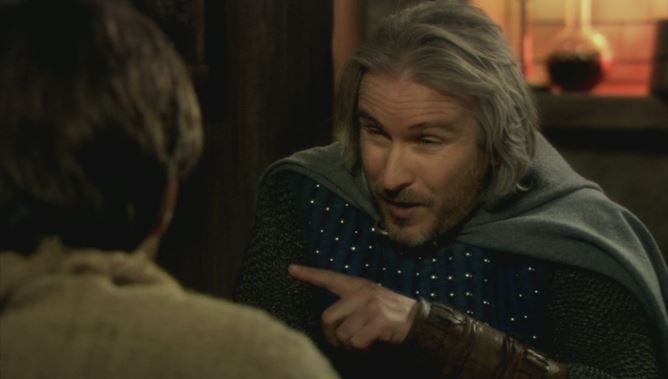
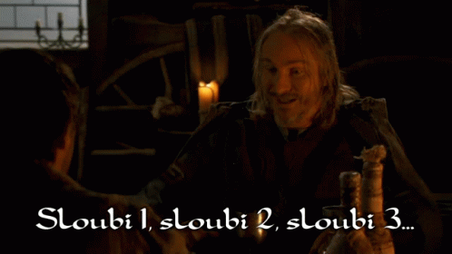

Le jeu du Pelican
C'est hyper facile, y'en a pour deux minutes, même un débile comprendrait ! Pour commencer, munissez de 120 ou 130 artichauts. Celui qui remporte la donne classe les artichauts du plus lisse au plus râpeux. Devenez le maître du tour de troc pour fourguer 17% de vos artichauts, faites artichette pour coller le banquier à -6 et tenter la raitournelle puis faites vos annonces.

Le Sirop
Il s'agit des règles simlpifiées, parce que les règles originelles sont velues. Maitrisez le principe des valeurs, peaufinez les subtilités du sirop de 14 ainsi que du couche sirop ; ou sirop Jeannot selon les régions. Et surtout, apprenez quand faire votre de sirop de 21 et dire beau sirop, mi-sirop sirotté, gagne-sirop, sirop grelot, passe-montagne, sirop de bambou.

Le Sloubi
On peut le jouer avec des dés même si c'est pas important, normalement ça se joue avec des bouts de bois il faut : 50 bouts d bois de 2 pouces, de 3 pouces et ainsi de suite jusqu'à avoir 50 poutres de la longueur de la pièce. Découvrez les 14 options possibles lorsque vous remportez le tour et apprivoisez les appels, notamment le chante sloubi.